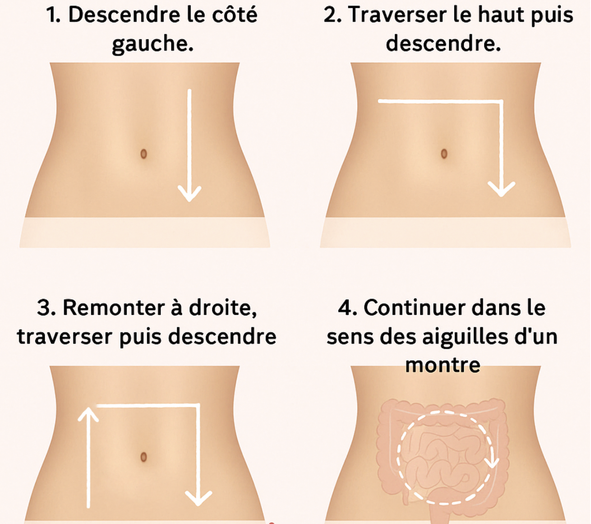
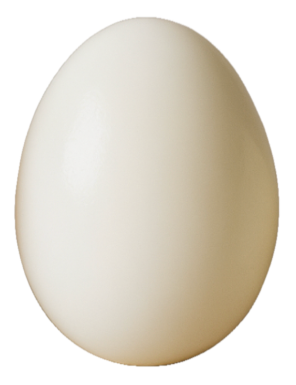
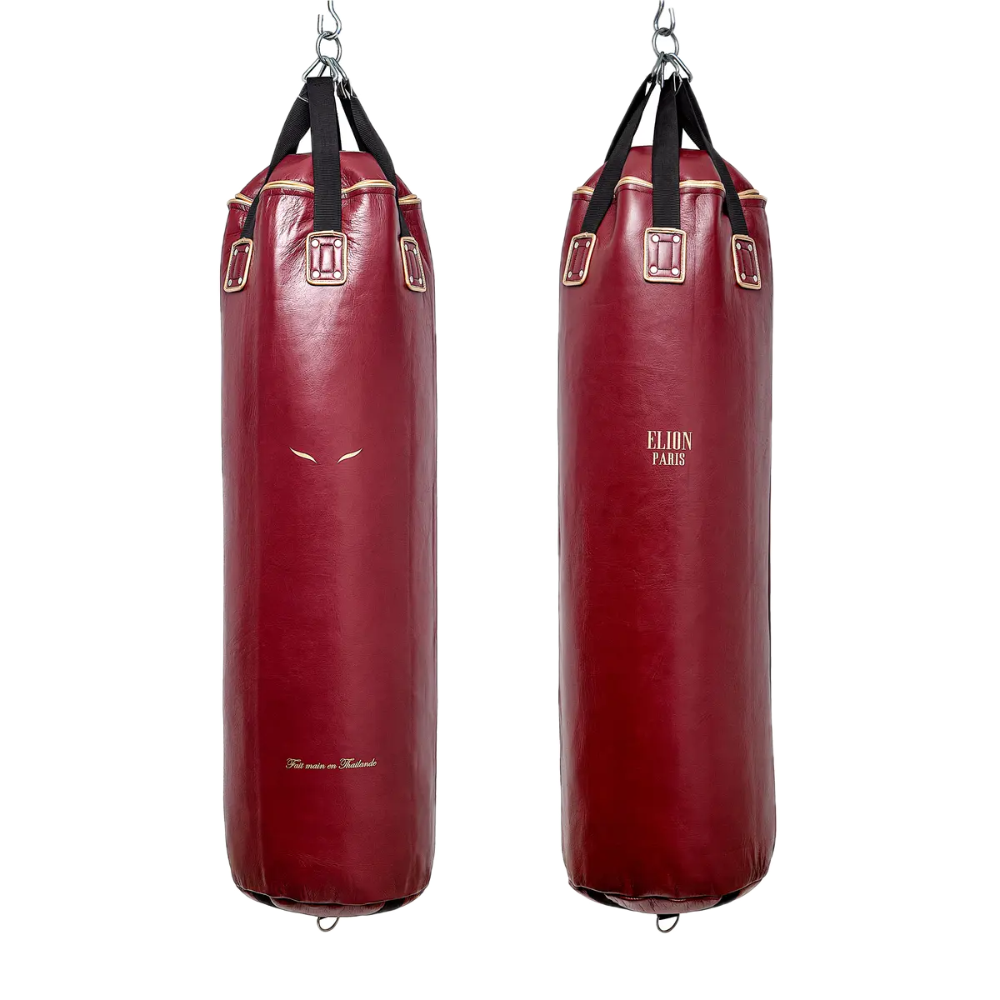
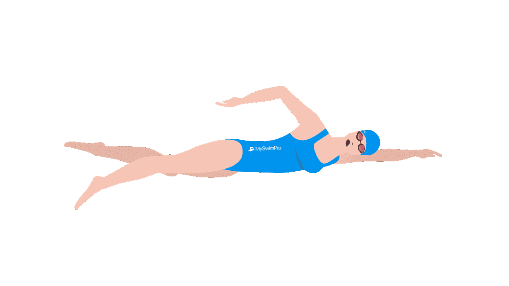
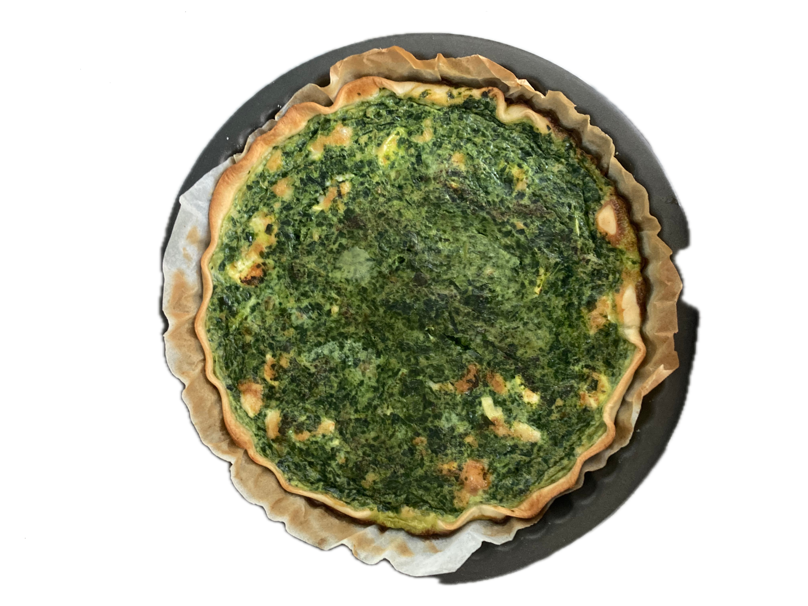

Réflexes au quotidien
Cette grande case traite de différents outils du corps qui peuvent être plus ou moins logiques. Je parle souvent d'apprentissage sur des fonctionnalités du corps assez basiques, comme la respiration. Je ne sais pas si je n'avais jamais su bien les faire ou si mes douleurs m'ont enfermées dans des réflexes qui les alimentaient. On rentre dans la partie hygiène de vie un peu extrême, mais quand tous les jours se résument à la douleur c'est des bonnes cartes en main. Peut-être que certains conseils vont sembler très bateau, joyeuse lecture.
La respiration
La première fois qu'on m'a parlé des applications de respiration ça m'a plutôt énervée et frustrée parce que j'avais des grosses douleurs et j'avais la sensation de ne pas être prise au sérieux, un peu comme si les médecins me disaient "respire, ça va aller mieux, c'est rien".J'ai quand même fini par tester et j'ai remarqué que quand j'avais mes douleurs j'avais le mauvais réflexe de ne pas respirer, ce qui me faisait rentrer dans le cycle de la douleur, augmentant le stress, les tensions musculaires etc.
J'ai à contrecoeur installé des applications de respiration, qui ont en fait été plutôt utiles. J'avais déjà essayé de respirer profondément mais pas assez longtemps, soit parce que j'avais la flemme, soit parce que ça me faisait mal. Pour des personnes qui n'ont pas de douleurs pelviennes c'est étonnant, mais beaucoup de personnes qui en ont subissent des douleurs pendant les grandes inspirations, je conseille de prendre le temps en se rappelant que c'est temporaire, que ça va passer.
Je les utilisais le matin et le soir pendant un moment, ça m'aidait. J'ai pu respirer correctement au bout d'un moment, grâce à ces applications, mais aussi grâce à mon suivi en kinésithérapie (voir la case kinésithérapie). Maintenant je ne les utilise plus car j'ai rentré ces exercices dans ma routine d'étirements, mais étonnamment il fallait qu'à un moment j'apprenne à respirer.
Le sommeil
C'est hyper bâteau, mais très efficace, parce que le sommeil joue un gros rôle sur les douleurs chroniques. Se coucher à la même heure et dormir le même temps chaque nuit, ça aide beaucoup, en prenant en compte qu'avec les douleurs chroniques vient la fatigue chronique, et que sous fatigue chronique on a besoin de plus dormir.J'ai plusieurs techniques pour contrer la difficulté à s'endormir :
la mélatonine naturelle
-> On trouve énormément de sérotonine dans les kiwis, qui après se transforme en mélatonine. Plutôt que les bonbons de pharmacie à la mélatonine, manger un ou deux kiwi avant de dormir peut être très efficace.
La mélatonine est produite dans le noir, donc ne pas regarder d'écrans avant de dormir ça aide, je sais aussi que la lumière du soleil dans la première heure du réveil ça aide beaucoup. Le fait de marcher après le réveil aide aussi à produire de la sérotonine et donc de la mélatonine.
Ça peut être un peu déprimant à Paris, mais c'est déjà un bon début de sortir dans la lumière des nuages.
Pour augmenter la sérotonine (et donc la mélatonine) il y a d'autres astuces, comme manger un petit déjeuner avec beaucoup de protéines (voir plus bas), la vitamine D, et encore une fois la régularité du rythme.
le magnésium
Le magnésium aide à dormir, mais ici plus particulièrement le magnésium de bisglycinate qui est conseillé pour l'endométriose, plus facile à absorber par le corps, qui favorise la décontraction musculaire et d'autres trucs chouettes. Pour trouver du bon magnésium bisglycinate il faut chercher précisément "magnésium bisglycinate chélaté".
Les étirements des yeux
C'est très bizarre vu comme ça, mais faire certains mouvements très lentement avec les yeux peut favoriser l'endormissement.
La technique que je connais c'est, les yeux fermés :
- regarder en haut
- regarder en bas
- regarder à droite
- regarder à gauche
- loucher
C'est très efficace pour se rendormir quand on se réveille en pleine nuit à cause de douleurs ou d'envie de pisser.
Faire des étirements avant de dormir
Je pense pas que c'est surprenant, des étirements avec des grandes respirations ça aide beaucoup pour s'endormir, un mouvement est particulièrement conseillé avant de dormir, être allongé·e·x avec les jambes en l'air contre un mur.Vider la tête avant de dormir
Ça veut dire laisser son tel pas à portée de main, et si on a une énorme liste de choses à faire, la préparer et la laisser de côté. Ça peut aussi aider de prendre 10-15 min avant de dormir et de noter tout ce qui nous prend la tête, ou enregistrer, ou juste parler à voix hautes (tout pour éviter l'insomnie lol).
Mode d'emploi pour aller aux toilettes
Beaucoup de personnes ont des douleurs au moment d'aller aux toilettes à causes de l'endométriose, surtout au moment de déféquer, et expérimentent des constipations chroniques.
Certaines choses sont très efficaces, comme avoir un petit tabouret pour surrélever les jambes. Ça aide les douleurs parce que c'est une très bonne position pour le périnée. Il y a aussi des mouvements qui aident à faire caca, comme faire des tours de bassins vers la gauche quand on est assis·x·e.Il y a aussi des massages qui aident, j'en fais pas souvent mais je sais que des personnes ont cette habitude.
Niveau alimentation
Le plus important pour moi c'est le moment du réveil.J'ai mit du temps à prendre les petits déjeuners au serieux, même après les cours de physique chimie où on me parlait de la pyramide de la santé et tout le tralala. C'est en essayant d'aller mieux que je me suis rendue compte à quel point ça changeait quelque chose dans mes journées.
Un petit déjeuner consistant aide à équilibrer les hormones (et au contraire pas de petit déjeuner favorise un chamboulement hormonal). Aussi, comme on l'a vu avant, permet de produire plus de sérotonine, et donc de mélatonine.
Personnellement ça m'a aidé sur beaucoup de points que ce soit l'énergie, avoir une détermination pour se lever le matin, aider à avoir de l'appetit dans la journée, et une bonne digestion, être de bonne humeur, etc... Sauf que pour que tout ça soit simple et consistant j'ai trouvé qu'avoir une routine précise ça marchait beaucoup mieux que juste me dire "je vais bien manger le matin".
Surtout quand il y a des boulangerie tous les 100m c'est compliqué de pas avoir envie d'un croissant mais à l'époque les croissants me faisaient très mal au ventre.
Je vous présente les ✨Œufs✨ c'est vraiment super, ça marche sous plein de formes : brouillés, au plat, durs, à la coque...
C'est simple à faire, c'est pas cher, en accompagnement j'avais du pain sans gluten ou des cracottes de sarrasin, tous les matins.
Pendant 6 mois je me suis fait des oeufs brouillés, puis pendant six autres mois des oeufs à la coque.
Après j'ai testé de me préparer des quiches à l'avance (voir recettes), par manque de temps le matin, et c'est super efficace, je mets pleins d'oeufs dans mes quiche et je les coupe en quatre : une part par jour pendant quatre jourds.
Quand j'ai vraiment pas le temps ça m'arrive de me faire ou même de me ballader avec des oeufs durs.

Il y a aussi ✨l'Eau✨ qui est plutôt pas mal niveau corps. Il y a deux ans ça me faisait très mal de boire de l'eau le matin, c'était impossible de prendre un verre d'eau entier dès le réveil, je me disais que c'était comme ça. À un moment j'ai vu sur les réseaux une personne qui disait que c'était une question d'habitude et qu'il fallait y aller au fur et à mesure.
Un ami m'a parlé d'à quel point il aimait l'eau le matin, ça avait l'air intéressant comme aventure, du coup j'ai commencé à développer ma tolérance en eau le matin. Un petit peu plus chaque jour. Pas trop d'un coup. Puis très rapidement ça me faisait de moins en moins mal et de plus en plus de bien. Maintenant je bois parfois deux verres d'eau le matin, c'est agréable et ça fait du bien.
Autre chose à boire le matin : des tisanes ! C'est toujours de l'eau, mais aromatisée. Contrairement au thé qui désaltère (oui oui) la tisane hydrate, du coup c'est beaucoup mieux. Pour le café je comprends l'envie mais à tout prix pas à jeun.
Dans le même registre, ça me faisait mal de manger certains aliments pourtant bon pour mon corps, comme les fruits. On m'a conseillé de manger des fruits secs avant de manger un fruit, et ça m'a beaucoup aidé.
Quand j'avais des crampes au ventre je faisais ce combo :
Noix de cajous, noix, ou amandes
+
Un fruit : pomme, kaki, banane (pas agrumes)
+
Antidouleur
J'ai aussi compris qu'une grande quantité de nourriture d'un coup était beaucoup plus dure à digérer,
j'ai essayé de ne pas me forcer quand je sentais que j'avais assez mangé et j'ai pris l'habitude d'avoir
un tupperware ou des snacks sur moi.
Niveau corporel
J'ai personnellement une hypertonie perinéale, c'est très courant avec des endométrioses, c'est quand le périnée est trop tendu. Ça peut provoquer beaucoup de choses et de douleurs que j'ai appris à repérer, quand je m'assois quelque part et que j'y pense je fais un contracter-relacher. C'est une technique que m'a appris ma kiné qui consisté à prendre une grande expiration, au moment d'expirer contracter le périnée et au moment d'expirer tout relacher.Même si je peux expliquer ici avec des mots le mieux c'est vraiment de voir une kiné, au moins pour apprendre ça.
Quand j'ai mal au ventre et que mes combos alimentaire n'ont rien changé j'essaye de remobiliser mes organes en jouant avec la respiration, ou en me massant. Pour s'auto-masser il y a plusieurs techniques, qu'encore une fois un·e·x kiné expliquera bien, le mieux selon moi c'est de tester, aller là où ça fait mal et au fur et à mesure ça devient des réflèxes. Souvent je vais chercher les points qui me font mal et je viens doucement appuyer dessus, si je suis en mouvement (par exemple marche) je viens plutôt tapoter aux endroits où j'ai mal pour brouiller les signaux de douleur (un peu comme si j'étais mon propre Tens).
Un des réflexes du corps quand on a une grosse douleur au ventre c'est de se pencher en avant, ce qui va engendrer plus de douleurs. Je conseille d'essayer plutôt de se mettre en arrière, d'aligner la tête aux épaules au bassin et de bien respirer (chercher à détendre le diaphragme pour détendre le périnée). Détendre la mâchoire ça peut aussi beaucoup aider !
Une douche ou une bouillotte peut faire du bien mais il faut faire attention à l'eau trop chaude, ça peut encore plus inflammer et augmenter les douleurs même si pendant quelques secondes ça soulage.
Pour moi le froid a été plus efficace, mais pas le très froid non plus, par exemple mettre un peu d'eau froide sur mon ventre à la fin d'une douche.
J'essaye aussi de "prévenir" (plutôt qu'essayer de guérir l'inguérissable lol) en faisant les étirements du matin, même 10 minutes ça change beaucoup.
Avoir des vêtements adaptés
Avec l'endobelly
Sensation de ballonnement, de ventre dur, visiblement gonflé et très inconfortable, voire douloureux.
Peut apparaître à n'importe quel moment du cycle et de la journée.
ça peut être très compliqué de trouver des vêtements confortables et adaptés qui ne vont pas tout d'un coup être trop serrés.
Le plus compliqué pour moi était la zone de la ceinture, j'ai dû arrêter de porter des jeans, même les ceintures des leggings étaient trop serrés,
les jupes tailles basses passaient parfois mais c'était pas idéal.
Par hasard je suis tombée sur des leggings de femmes enceintes, leurs élastiques
me serraient beaucoup moins et avec quelques points de coutures c'était parfait. J'ai donc commencé une collection de leggings de femmes enceintes,
je raccourcis leurs ceintures et les resserent un peu si besoin.
Si vous voulez faire la même chose je conseille de prendre une ou deux tailles en dessous de votre taille normale pour que ça ne tombe pas sans arrêt.
En hiver je les superpose, j'en ai trouvé des plus ou moins épais.
Le deuxième problème que j'ai eu avec mes habits étaient les culottes. J'ai développé une hypersensibilité sur les plis des cuisses et si mes culottes
ont des élastiques ça me donne une impression de lame de rasoir tout le long de la journée. J'ai pu trouver des culottes sans élastiques et qui me convenaient,
mais à certains moments le simple contact d'une couture était too much donc je devais ne pas porter de culottes, maintenant ça va mieux mais je porte
quand même mes culottes à l'envers pour que les coutures soient à l'extérieur.
Ce dernier problème a été résolu grâce au suivi que j'ai eu en kinésithérapie. Pour ce qui est des pantalons, je n'ai pas encore de solution pour ne pas
avoir l'endobelly, car les déclenchements sont nombreux et durs à discerner.
Sport et endométriose
On me disait de bouger, de faire du sport, de marcher. J'avais mal tout le temps, c'était trop dur de bouger.
Quand j’arrivais à m'y mettre, mes règles arrivaient et ruinaient tous mes efforts de régularité en me clouant au lit.
Ça me semblait impossible d'avoir un rythme, une routine.
J’ai pu réellement m’y mettre une fois que j’ai été en aménorrhée artificielle (sans règles), en faisant des
étirements.
Je les considérais comme un moyen de guérir et je les voyais comme un traitement sur le long terme.
Maintenant je pratique également d’autres sport en plus (pole dance et boxe), j’essaye de les considérer comme une "preuve" que mon corps est fort,
même si ça m’arrive d’avoir des douleurs qui m’empêchent d’y aller, et aussi d’avoir des douleurs pendant.
Des études ont montré l’efficacité d’une pratique sportive douce contre l’endométriose (voir "les études utiles") et
je pense que c’est un des conseils qui s’appliquent peu importe l’endométriose.
Dans ces études les pratiques conseillées sont :
Les étirementsLe pilate
La natation
La marche
Certains sports ne sont pas forcément conseillés, surtout en cas d’hypertonie périnéale, principalement les sports qui demandent des contractions musculaires importantes (notamment abdominales).
Je vois en quoi c’est important de prendre ça en compte quand on est dans le fond du trou des douleurs chroniques et que ça semble impossible de faire du sport, dans ce cas je pense que les sports « doux » sont les plus adaptés. Mais une fois cette « étape » passée ou évitée, le plus important c’est de faire quelque chose qui nous passionne et qui peut nous faire oublier la douleur quand elle est présente mais pas trop élevée.
J’ai essayé la danse mais j’ai trouvé ça pas hyper adapté pour mes douleurs, le pole dance par contre j’aime beaucoup parce que la pole est à la fois un support du corps et à la fois quelque chose contre lequel on « lutte ».
Comme la pole fait mal (bleus, brûlure) ça m’a fait travailler mon échelle de la douleur et une sensibilité que j’ai en général aux coups (que je sens diminuer). Même si ça demande beaucoup de contractions musculaires, il n’y a pas de sauts ou de déplacement brutal dans l’espace, je vois ce sport comme doux mais fatiguant.
Je remarque que le jour même et lendemain d’une pratique sportive adaptée, même si j’ai des courbatures, je me sens bien et mes douleurs sont moins présentes. Cet état a mis du temps à venir, quand j'ai repris le sport après mes douleurs chroniques c'était plutôt l'inverse mais ça a changé au fur et à mesure.
Cet état est peut être aussi lié au fait que le jour où je fais du sport je fais attention à ce que je mange pour éviter d’avoir mal et de ne pas pouvoir aller m’entraîner.

Je fais également de la boxe, et là c’est un peu plus compliqué, sûrement par rapport aux chocs que le corps encaisse. Parfois j’ai du mal à taper le sac de frappe, parce que donner un coup de poing demande une rotation de tout le haut du corps, ces torsions font mal ou empirent une douleur déjà présente.Au moins dans ces moments je peux imaginer que je suis en train de frapper mon endométriose !
Je pense que c’est un sport très utile pour moi, pour me sentir plus forte et plus capable de me défendre. Aussi parce que ça me fait travailler mes trapèzes et en général les muscles de mon dos et épaules. Ce qui est utile pour m'aider à porter mes sacs à dos sans avoir constamment envie de m'ffondrer ! J'ai l'impression que ça distribue le poids sur mon corps, et si c'est placebo c'est pas grave ça marche quand même.
Il y a bien sûr la natation qui aide beaucoup le corps sans faire mal, en plus de ça, l’eau froide peut être bénéfique contre l’inflammation.

J'ai aussi récemment réessayer de partir marcher dehors et dormir dehors, avec le matériel dans le sac et la nourriture. J'avais pas fait ça depuis longtemps, parce que la dernière fois c'était catastrophique. Cette fois c'était beaucoup mieux, même si j'avais mal, je me sentais plus capable. Surtout ça m'a donné espoir qu'en me préparant bien je pourrais partir pour de vrai, en sachant que je dois écouter mes douleurs et donc que je peux pas prévoir d'itinéraire parce que c'est possible que je doive juste m'arrêter pendant un moment.
Je me suis demandée ce qui pourrait m'aider à contrer la sensation de pression sur le ventre, que j'ai constamment quand je porte du poids, et je pense que le tens serait une bonne solution si léger et sans câbles. Mais comme j'ai pas de tens je verrais plutôt pour me trouver des bandes de tape pour le ventre (voir pages précédentes dans médicaments et outils).
Bref, tout ça pour dire que les sports posent des problèmes mais essayer de passer au-delà peut nous faire sentir plus capable. Aussi, dès que je fais un peu de marche, même pour aller prendre un café, je considère la marche comme quelque chose qui me soigne et ça change beaucoup mon rapport à ce que je fais.
fun fact : une étude avait prouvé que la zumba était efficaces contre les dysménorrhées (douleurs liées aux règles), sadly elle a été retirée par suspiscions sur la faisabilité des méthodes utilisées (ici).
mouvement peu importe lequel
Liste non exhaustive de mini-possibilités non-sérieuses :- Marcher un peu autour de chez soi jusqu’à trouver un élément précis
- Danser doucement sur une musique
- Faire des tours de bassins, debout ou assis·x·e
- Faire du vélo, sans se forcer, si il faut poser pied à terre pour faire une montée c'est qu’il faut poser le pied à terre pour faire la montée
- Faire du roller sur de la super musique
Bouger au quotidien quand c'est possible aide vraiment. Le plus important est de trouvé quelque chose qui nous plaît, dans cette étude Endometriosis: patient–doctor communication and psychological counselling le sujet de l'attitude interne face à l'endométriose est abordé, pour comprendre ce qui déclenche nos douleurs et ce qui peut nous aider à passer au delà.
Ces questions sont mises en avant pour essayer d'établir des mini-projets à mettre en place dans le quotidien :
“In what situations do you manage to forget endometriosis completely?”
“Can you integrate those situations into your everyday life and possibly even extend them?”
Pour moi les cours de pole dance me permettent ça, surtout le matin,
Études importantes
"Associations between physical exercise patterns and pain symptoms in individuals with endometriosis"
Cette étude confirme qu'une pratique sportive aide à gérer la douleur et à la diminuer, c'est quelque chose que j'ai pu sentir de mon côté et dont je parle
dans "Agir en autonomie".
"Comparison of Effects of Ginger, Mefenamic Acid, and Ibuprofène on Pain in Women with Primary Dysmenorrhea"
Ici on apprend que le gingembre est autant efficace que l'ibuprofen et que l'acide méfénamique (je n'ai jamais testé le dernier).
"Use of ginger versus stretching exercises for the treatment of primary dysmenorrhea: a randomized controlled trial"
Cette étude est en accord avec la précédente, en comparant trois groupes, un qui prend du gingembre, l'autre qui fait des étirements et
le dernier qui ne fait rien en tant que groupe de contrôle.
"The students in both groups did not exercise regularly
before the interventions"
Les deux premiers groupes ont vu leurs douleurs diminuer, cependant l'étude montre que les étirements sont encore plus efficaces que le gingembre pour diminuer
les douleurs pendant les règles.
"The exercise programs included 5 min of warm-up movements
in a standing position, followed by 6 stretching exercises
for the abdomen and pelvis for 10 min. This program
was performed for 15 min, 3 times per week"
Ils mentionnent une étude que je ne trouve pas qui aurait combiné les deux (gingembre et exercices d'étirements) et la diminution de la douleur était encore plus efficace.
celle-là sur en quoi le THC et CBD peuvent aider la douleur liée à l'endométriose :
Association of endocannabinoids with pain in endometriosis
Les étirements
Après avoir vu des témoignages de personnes et des études qui montraient
en quoi les étirements aidaient les symptômes de l'endométriose, j'ai décidé d'essayer.
Je savais pas trop par où commencer et j'avais du mal à tenir un rythme, j'avais l'impression que mon corps était rouillé.
Pour réellement m'y mettre il a fallu que je bloque mes semaines de vacances à chercher et créer une routine où
je commençais par des étirements le matin.
C'était désagréable au début, certains mouvements me faisaient mal. Puis j'ai remarqué que ça devenait de plus en plus facile chaque
jour, jusqu'à devenir une envie.
Mon plus gros conseil c'est de bien respirer, inspirer par le nez et expirer par la bouche,
autre conseil, c'est qu'il faut s'écouter sur quel mouvement nous aide et quel mouvement est trop brutal,
ne pas hésiter à adapter les mouvements en fonction de nos corps.
Les étirements que je fais, dans l'ordre (15-20min) :


- Assise en tailleur, des tours, de plus en plus amples
-> débloque le bassin, les hanches, mobilise les organes du petit bassin.
Possible de faire remonter jusqu'en haut de la colonne en engageant le dos, le torse, le cou, la tête.


>La position du papillon :
pied contre pied et jambes pliées.
En penchant le dos, chercher à étirer
le bas du dos et les muscles du fessier.


En dépliant une jambe, essayer d'attraper son pied avec ses bras en se penchant sur le côté.

 -> Basculer de l'autre côté, en gardant une jambe pliée et une tendue on tourne le bassin vers la jambe pliée.
Respirer vers le haut, puis respirer vers le bas. Des deux côtés.
-> Basculer de l'autre côté, en gardant une jambe pliée et une tendue on tourne le bassin vers la jambe pliée.
Respirer vers le haut, puis respirer vers le bas. Des deux côtés.

Le chat : à quatre pattes bomber le dos puis le plier, essayer de faire des ronds si c'est agréable, d'engager le bassin, le cou, etc.

 S'allonger sur le dos, tours de bassins en pliant les genoux.
S'allonger sur le dos, tours de bassins en pliant les genoux. Toujours allongé. Pied gauche au sol, pied droit sur le genou gauche, on vient prendre le genou gauche et le rapprocher du torse.
Pour finir, le papillon inversé : le papillon avec les jambes mais en étant allongé sur le dos permet de se détendre et peut être simple à faire quand les douleurs nous clouent au sol < 3
Bonus douleurs sciatiques :
 Tendre une jambe au sol, tendre l'autre vers le ciel. Prendre le genou dans ses mains et essayer de faire des toutes petites rotations
au bassin. Très lentement chercher les endroits où c'est tendu, où ça bloque et y rester.
Tendre une jambe au sol, tendre l'autre vers le ciel. Prendre le genou dans ses mains et essayer de faire des toutes petites rotations
au bassin. Très lentement chercher les endroits où c'est tendu, où ça bloque et y rester. Le plus important c'est de respirer profondément, ne surtout pas couper ou bloquer sa respiration. Il y a différentes manières d'étirer ses muscles, personnelement j'aime que ce soit fluide et je cherche la détente quand je suis dans une position. J'ai aussi pu constater que pour que je me sente bien et pour que ce soit efficace il fallait que je sois seule.
Si le corps est en forme

 Cet étirement est très efficace pour travailler le muscle du psoas,
je conseille de le faire si l'énergie est là !
Cet étirement est très efficace pour travailler le muscle du psoas,
je conseille de le faire si l'énergie est là !
Un chouilla d'anatomie
c'était utile pour moi d'apprendre quelques points anatomiques pour essayer de préciser mes sensations et cibler les bons exercices.Le psoas :

Il est super utile! Il sert à marcher, à stabiliser le bas du dos, la hanche, et d'autres trucs contenant des termes médicaux trop précis pour ce site.
Il était trop tendu chez moi, ça me provoquait des douleurs en bas du dos et en haut des hanches. J'ai appris à l'étirer et mes kinés m'ont aussi appris des mouvements pour le soulager. Cette routine a eu beaucoup d'effets sur mes douleurs et sur ma sensation d’emprisonnement dans mon corps. Bonus trop de douleurs pelviennes pour bouger : Quand je fais mes étirements et que j'ai encore mal, ou que je sens que quelque chose ne passe pas malgré tous mes étirements de bassin, je fais des étirements de la langue. Oui, ça existe, j'ai pas trouvé d'études sur l'efficacité des étirements de la langue sur les douleurs liées à l'endométriose, avec moi c'est super efficace.
Toujours en prenant des grandes respirations.
C'est assez simple, ça consiste juste à tirer la langue le plus haut possible, le plus bas possible, et sur les côtés le plus loin possible. Il y a aussi des versions où on peut attraper la langue (avec une serviette propre pour pas glisser) et la tirer très lentement là où on le sent.
Pas mal de personne rigolent quand je leur en parle (encore plus quand je montre les exercices) mais vous ne perdez rien à tester, surtout face à la douleur tout est bon à prendre.


Alimentation anti-inflammatoire
À un moment où j'avais beaucoup de douleurs j'ai voulu tester l'alimentation anti-inflammatoire,
j'avais vu pas mal de personnes qui disaient que ca les aidait pour leurs douleurs.
Le but n’est pas de se retrouver avec un régime alimentaire qui ne fait pas sens et qui paraît inaccessible.
Les premières fois que j’ai appris que l’alimentation pouvait aider les symptômes d’endométriose j’y ai pas cru, et
surtout, ça me paraissait compliqué, contradictoire et absurde.
Effectivement quand on se penche sur le sujet il y a beaucoup de contradictions, et si on écoute
tout on finit par manger tous les jours des carottes et patates bouillies à l’eau avec de la polenta et la vie ressemble à une mauvaise
tambouille. Il faut faire attention à ce que ça ne devienne pas une prison d'interdictions.
L’objectif ici c’est de comprendre certains mécanismes entre l’alimentation et l’inflammation, de se sentir mieux renseigné
et l’objectif final est de trouver individuellement ce qui nous fait du mal.
Le plus difficile avec l’endométriose c’est que les symptômes ne sont pas stables et peuvent changer,
on peut pendant trois mois mal digérer les tomates et puis après que ce soit un incontournable dans nos plats pendant deux semaines.
Pour ma part le fait de tester, réduire, éviter, puis ré-introduire certains aliments m’a appris à écouter mon corps
et ses réactions.
Avec le temps ça devient plus simple, même si je trouve ça toujours frustrant de pas pouvoir faire
ce que je veux quand je veux. Mais c’est comme ça, je vis avec ça et le but c’est de continuer à vivre le plus facilement possible,
et dans mon cas l’épreuve de me faire à manger est moins isolante que celle de la douleur.
Il y a des périodes où je ne sens plus ses restrictions, parce que je m’y suis habituées ou parce que mes symptômes sont minimes.
Il y en a d’autre où c’est crucial, et dans ces moments je suis contente d’avoir pris le temps de me renseigner parce que la nourriture
peut réellement être efficace pour diminuer les douleurs.
C'est quand même quelque chose qui m'a énormément aidée, avant de le faire j'appréhendais énormément les repas
parce que je savais que j'allais avoir mal au ventre.
Parfois c'est suffisant de se faire à manger anti-inflammatoire seulement le soir ou en fonction des personnes même moins,
mais je conseille vraiment de tester une période pour identifier les douleurs liées à l'inflammation par la nourriture, la digestion et les autres.
Ce que j'ai cherché à ajouter
Les oméga 3 (sardines, saumon, avocat, noix etc)
Manger des légumes : chaque couleur indique une différente vitamine que le légume apporte, c'est bien de chercher différentes vitamines
-> si on a pas l'habitude de manger beaucoup de légumes ça peut faire mal au ventre au début, je conseille d'y aller doucement, et d'éviter les crudités!!
Les légumes qui sont super : Les carottes, les patates, les patates douces, la courgette, l'aubergine (sans la peau), le concombre, l'avocat
Des fruits, même si certains comme les agrumes sont plutôt à éviter
-> à un moment les fruits me faisaient mal au ventre aussi et on m'a dit de manger des fruits secs avant de manger un fruit, ça fonctionnait bien, et c'est devenu une solution de secours quand j'avais mal. Quand j'avais des douleurs soudaines je mangeais des noix et une pomme ou autre fruit et ça marchait bien.
J'avais essayé des compléments alimentaires comme l'échinacée que j'aime beaucoup et le magnésium mais je ne sais pas si c'est réellement efficace. Il y a aussi pas mal de sites pour l'endométriose qui proposent des cures spéciales mais je n'ai pas testé.
Le curcuma, la cannelle (épices anti-inflammatoires)
+ astuces : prendre le temps de manger dans un environnement calme, ne pas retarder l'envie de manger, et boire de l'eau.
Ce que j'ai cherché à éviter
Le café c'était compliqué, le déca aussi, et le thé aussi au final du coup j'ai bu de la ✨tisane✨ parce qu'en plus ça hydrate. Maintenant je peux prendre un café par jour après mangé et ça va.
Le sucre (pic de glycémie -> pic d'insuline -> inflammation)
J'ai arrêté l'alcool pendant un an, ça a bien marché, mais c'était isolant. Maintenant je bois jamais de bière et de temps en temps de l'alcool mais cette pause m'a habituée à prendre un soda quand mes amix prennent une bière.
Les légumes à éviter :
La famille des choux (tous les choux, en prenant en compte le radis, le navet, le brocolis), la famille des plantes à bulbes : oignons, ail, poireau. Parce qu'ils produisent des gaz qui peuvent mener à une aérophagie.
Les légumineuses Pois chiches, fèves, soja, lentilles, haricots rouges… , parce qu'elles produisent elles aussi de l'air qui reste coincé, donc des ballonnements et douleurs intestinales interminables
Le gluten, c'est très chiant et compliqué, c'est tout un apprentissage, mais une fois qu'on sait par quoi remplacer c'est plus simple, je sais que ça m'a beaucoup aidé et j'évite encore d'en manger autant que je peux, surtout le matin.
-> Il y a du gluten dans : les pâtes, les céréales, la farine : donc beaucoup de pains de gâteaux, à peu près tout en boulangerie sauf le pain au maïs. Le lactose, pareil, donc fromages, lait, etc. (à un moment j'ai cru que les yaourts sans lactose ça allait mais en fait pas du tout)
Les plats tous préparés de supermarchés (à cause du sucres et des autres conneries)
Le Tabac, still working on that.
L'avocat et le concombre peuvent aussi être difficile à digérer en fonction des personnes.
La viande rouge j'ai cherché à l'évitée mais pour éviter les carences j'en mangeais quand même à des moments.
Attention aussi au riz blanc parce que ce filou il est simple à faire, il est neutre niveau inflammation, et c'est super bon, mais en grande quantité il peut provoquer des pics de glycémie qui eux provoque l'inflammation (comme le sucre)(nul). (le riz complet c'est un peu mieux)
Puis il faut voir aussi de façon individuelle ce qui pose problème, on peut être étonné par beaucoup de choses mais le principal c'est d'écouter son corps. Par exemple à un moment je supportais pas la tomates, et maintenant ça va.
Ce que j'achète au supermarché
Trouver de la nourriture spécialement sans gluten est souvent compliqué, cher et inutile.Parce que contrairement à des personnes qui ont la maladie cœliaque et qui ne peuvent pas manger d'aliments contenant des traces de gluten, on n'a pas à éviter les traces de gluten.
Un exemple concret sont les flocons d'avoines, ça sert à rien d'en prendre "sans gluten" (= sans traces de gluten) parce qu'il n'y a déjà pas de gluten dans l'avoine. Donc tous les gâteaux à l'avoine c'est super 👍.
Si je veux du lait je vais pas acheter du lait de vache, et le lait d'avoine ça peut être compliqué aussi, donc plutôt du lait d'amande.
Pour avoir du pain sans gluten, je conseille pas trop le pain de mie sans gluten, ils sont chers et perso me font mal au ventre. À Paris j'achetais des pains dans des bios, il y en avait beaucoup et ils sont super bons. À Athènes j'achète surtout des galettes de maïs. J'aimerais bien me mettre à me faire mon pain.
Pour mes plats, j'achète du quinoa, du riz complet, du riz blanc, de la polenta.
Pour les omégas trois j'achète des sardines, du thon, et si je suis fancy du saumon.
En légumes d'hiver j'achète : de la butternut, des patates, des patates douces, de la salade, des carottes.
En légumes d'été j'achète : des courgettes, toujours des carottes, des concombres, des avocats, des aubergines, des tomates, des poivrons (même si la peau peut faire mal au ventre).
J'achète des gâteaux à l'avoine, et les fruits que je veux en évitant les agrumes.
Très important pour moi : les oeufs. tout le temps des oeufs. C'est mieux en général d'avoir des oeufs riches en oméga 3, et encore plus dans le cas de l'endométriose (comme vu dans la case précédente). En France il y a un label qui a des oeufs riches en oméga 3 il s'appelle "bleu blanc coeur".
précisions
Il y a des périodes où j'ai peu d'efforts à faire, parce que mon corps accepte plus de choses à ce moment là et que je peux manger pas mal de choses sans restrictions.Par contre il y a aussi l'inverse, des periodes où énormément de choses me font mal, et dans ces moments ça paraît interminable, je tente de manger sans restrictions et ça passe pas, c'est des moments où j'ai l'impression que je vais devoir faire ça toutes ma vie.
Puis en fait ça fini toujours par passer, puis revenir, puis repasser. C'est comme ça depuis deux ans, il y a des periodes entre un et trois mois où je dois manger anti-inflammatoire puis après ça va mieux pendant un à trois mois.
Attention à pas supprimer entièrement des choses comme le gluten pendant trop longtemps, sinon la tolérance baisse.
Je conseille vraiment de tester si le mental est là pour soutenir parce que c'est comme ça que j'ai pu comprendre ce que je digère moins bien, c'est une super carte à avoir contre la douleur.
C'est un peu déprimant la grande liste de restriction mais il existe pleins d'alternatives, de pains, de différents types de farines et blablabla, voir case suivante pour des idées concrètes de recettes.
idées de recette
La nourriture anti-inflammatoire, en plus de prendre du temps, coûte de l'argent. Au début j'ai pataugé sans savoir quoi manger.
Du coup je mets quelques recettes et conseils pour avoir une alimentation anti-inflammatoire pas trop chère. <3
Il y a des variantes en fonction de si on veut quelque chose de vraiment anti-inflammatoire,
ou si on veut quelque chose de neutre (pour plus de compréhension lire les cases précédentes).
Pancakes de courgettes :
 - Farine de sarrasin ou autre farine ou un mélange
- Farine de sarrasin ou autre farine ou un mélange- des oeufs
- une ou deux courgettes
Qu'est ce qu'on fait de tout ça :
- raper la courgette en entier et essayer de presser au max l'eau des courgettes (pour + de densité)
- mélanger tout
- faire cuire en petit pâtés = boum des pancakes de courgette
Ça se mange comme ça ou avec des trucs par dessus comme du pain
Salade de quinoa croustillante
 Base :
Base :- Quinoa cuit
- Salade (roquette, mâche...)
- sardines, ou saumon
- Amandes, ou noix de cajou, ou noix
 + ma recette préférée de sauce salade :
+ ma recette préférée de sauce salade :Tahini (purée de sésame) + Vinaigre balsamique + Miel + Huile d'olive
Variantes de ce qu'on ajoute, en fonction des préférences et intolérances :
- Avocat, ou tomates
- feta, ou autre fromage ou pas
- Pois chiches
Pour rendre croquant le quinoa mou, il suffit d'étaler le quinoa déjà cuit sur une plaque de cuisson, verser de l'huile et faire cuire pendant 10-15 minutes jusqu'à qu'il soit grillé.
Si tu digères les pois chiches et tu veux des pois chiches grillés tu fais pareil et tu les superposes dans ton four.
Si tu digères pas tu peux rajouter des carottes cuites ou n'importe quoi.

Pendant ce temps tu fais la sauce, tu coupes tes légumes cru et tes noix.
Une fois que tout est coupé et grillé, tout mélanger et faire une photo.
C'est super bon et l'assemblage de légumineuses + céréales (ici pois chiches + quinoa) recrée pour le corps l'apport en protéines de la viande.
Tambouille réconfortante
 Ingrédients :
Ingrédients :4 oignons
un bout de gingembre
une poignée de noix de cajou
et une d’amandes
un peu de coriandre
du lait de coco
Recette :
Couper les oignons en lamelles, faire cuire doucement les oignons puis ajouter les fruits secs coupés à griller, quand les oignons ont doré incorporer le lait de coco, le gingembre coupé en dés, et la coriandre
Possible d’en faire un grand tupperware à manger sur plusieurs jours, en accompagnement de riz, pâtes ou… de quiche !
Quiche chèvre épinards

Ingrédients :
Pâte brisée (sans gluten si possible, après, c'est pas une grande quantité de gluten)
Épinards surgelés
Chèvre
Œufs
Crème fraîche/Lait de coco
Recette :
Réchauffer les Épinards surgelés comme indiqué sur leur paquet, ou cuire des épinards frais si t'as pas la flemme ! À côté mélanger des œufs (j’en mets 5/6 pour une quiche dense)
Tout mélanger en émiettant le fromage de chèvre et verser sur la pâte brisée !
Bonus : ajouter du comté ou de l’emmental (si tu digères ça) au dessus pour un effet gratiné
Très bon en petit déjeuner ou à n’importe quel moment seul ou accompagné
Golden Latte
- Lait
- Curcuma (en racine ou en poudre)
- Gingembre (pareil)
- Cannelle
Chauffer le lait et le mélanger au reste, ajouter du miel si envie.
Le curcuma et la cannelle sont bons pour leurs effets anti-inflammatoires et le gingembre est un antioxidant. Le golden Latte est une boisson chaude antioxydante et anti-inflammatoire qui est d'origine Indienne. Il y a plusieurs versions parce qu'on peut la faire avec une base de lait mais aussi avec du lait végétal. J'aime bien utiliser le lait de noix de cajou pour plusieurs raisons.

Omelette
Je pense pas qu'on a besoin d'un grand descriptif pour celle là, les omelettes c'est super parce qu'on peut mettre pleins de choses de dans des patates des carottes des poivrons et tralala.Cake avec farine sans gluten
Pareil ici on met tout ce qu'onChapatis sans gluten
Ingrédients :
Farine de maïs, ou de sarrasin, ou autre farine qui n'a pas de blé, un mélange par exemple
Un peu d'huile
Recette :
Mélanger la farine avec un peu d'huile et de l'eau jusqu'à obtenir une pâte. Étaler la pâte, faire cuire dans une poêle de chaque côtés.
Votre tartine sans gluten est prête à être mangée !


Babaganoush
Ingrédients:Aubergines
Tahini
Ail
Quelques glaçons (optionnel)
Recette :
Couper les aubergines en deux et dessiner des entailles en grille dans la chair de l'aubergine.
Les mettre au four, chair contre le plaque et peau vers le haut du four, avec les gousses d'ail.
Faire cuir jusqu'à ce que la chair sois bien cuite, laisser refroidir, enlever la peau de l'aubergine et broyer la chair à la fourchette.
Mélanger un peu le tahini aux quelques glaçons (pour l'épaissir) puis enlever les glaçons, rajouter la chair d'aubergine, l'ail cuit, et tout fourchetter.
Prêt à déguster, avec la possibilité de rajouter pleins d'autres choses selon les goûts.
Pain/Brioche sans gluten, simple à préparer
Ingrédients :
4 Oeufs
Pas mal de tahini
Recette :
Mélanger oeufs et tahini jusqu'à obtenir une pâte fluide, mettre au four. Possible d'agrémenter de graines pour plus de textures.
Autres :
Soupes accompagnées de riz.
-> Préparable en grande quantité, pour consommer sur plusieurs jours sans se prendre la tête.
toutes les recettes de tartes ou quoi mais en achetant une pâte sans gluten, on en trouve facilement maintenant et pas trop + chère, pareil pour les pâtes.


Autres réflexes utiles qui peuvent aider à se faire à manger facilement
Faire des gros tupperware d'une recette c'est bien mais ça peut être lassant en fonction des personnes, quand je sais que je veux manger des choses qui ont pas le même goûts je préfère faire des petits tuperware, par exemple un de carottes, un autre de patates etc.Le fait d'ajouter des herbes vient aussi modifier le goût, le même plat n'aura pas le même goût avec persil que sans. + soupes + pain sans gluten avec oeufs et tahini
Comment voir son corps en douleurs chroniques, le lien entre les douleurs et notre état psychologique
comment voir la maladie
Une recherche aussi importante que compliquée qui est aussi constamment en construction, comment accepter le diagnostic sans désespérer ?Comment considérer son corps, au delà de l’état dans lequel il est sur le moment, et qu’est-ce qu’on partage aux autres ?
Surtout avec les handicaps invisibles et avec l’endométriose, plusieurs facteurs fluctuent constamment, comment les autres nous voient, s'ils ne nous ont jamais vu·e·x en crises nos douleurs peuvent passer complètement inaperçues.
Au quotidien la maladie n'est pas la même tous les jours, on peut courir dans tous les sens le lundi et être allité·e·x le mardi, c’est très difficile pour moi de parler de mon état en général parce que ça fluctue et que mon positionnement par rapport à l’endométriose change aussi.
Les périodes où je peux manger ce que je veux et où les douleurs ne sont présentes que le soir je vais considérer que j’ai un corps en forme et capable d'agir, mais il suffit que j’essaie de sortir le soir et que j’ai une crise pour que cette idée s’effondre.
Les périodes où je ne peux pas manger ce que je veux sont encore plus dures parce que la douleur arrive très facilement au quotidien et je mets toute mon énergie à la gérer, la prévoir, comprendre ses nouvelles logiques. Dans ces moments je vois mon corps comme nécessitant énormément d’accommodations et j’ai beaucoup de mal à me dire que ça passera et que ce sera plus léger dans le futur.
Effets placebo et nocebo :
L’effet placebo consiste en un soulagement de la douleur par la croyance. Le nocebo est le penchant négatif de ce phénomène, l’aggravation d’une douleur. Il est souvent mal vu dans l’imaginaire collectif ou en tout cas les douleurs soulagées par les placebos sont considérées comme des « fausses douleurs ». Pourtant une douleur n’est pas moins importante parce qu’elle est induite par le cerveau, elle est même d’autant plus dure à gérer et faire disparaître.
Le livre Neuromania m’a beaucoup appris sur les différents types de douleurs, dans le chapitre « en finir avec une vision réductrice de la douleur » Albert Moukheiber parle de « deux histoires de clous ».
Il relate l’histoire d’un ouvrier qui va aux urgences après avoir eu un clou transperçant sa chaussure, il souffre énormément et est fortement anesthésié. Le clou est retiré, quand il enlève sa chaussure il constate qu’il n’a aucune blessure par le clou. La douleur a été induite par la vue du clou mais elle n’avait pas de source nociceptive.
Il y a l’histoire inverse, un ouvrier qui a une douleur à la dent pendant quelques jours et qui va chez le dentiste. Chez le dentiste il apprend qu’il a un grand clou planté dans la dent qui remontait presque jusqu’à son cerveau, pourtant il n’avait qu’une douleur à la dent.
Ces deux histoires me paraissent très intéressantes sur comment notre cerveau gère l’information d’une douleur, et sont très en lien avec l’endométriose, par rapport au fait qu’on peut avoir très peu d’endométriose mais beaucoup de douleurs, et inversement.
Certaines douleurs sont effrayantes, on peut avoir l'impression d'avoir de l'endométriose dans les jambes, dans le diaphragme assez facilement à cause des douleurs. Il faut prendre en compte que la douleur de l'endométriose peut irradier des endroits où il n'y a pas de lésions, parfois apparaître tout d'un coup. Ça peut donner l'impression que notre endométriose s'étend partout mais ce n'est pas forcément le cas. Nos lésions peuvent être à un endroit et se faire sentir à un autre.
Le but de cette case est de comprendre comment ne pas partir dans des boucles effrayantes et stressantes sur l’étendue de notre endométriose.
Comment être dans un corps en douleurs chroniques ?
Cette étude Endometriosis: patient–doctor communication and psychological counsellingdonne des clefs et recommandations pour améliorer la relation médecin-patient, je trouve que beaucoup de points sont utiles et j'aurais aimé avoir un·e·x médecin qui se servait de ces conseils. Comme je n'en ai pas, j'applique les conseils en solo.
Pour éviter le cercle vicieux de douleur-stress (qui est décrit dans "le lien entre douleur et psychologie" dans Comprendre l'endométriose), l'étude propose d'observer son corps sans le juger, de remarquer la douleur, les tensions, la fatigue, en essayant de ne pas paniquer et anticiper ce qui pourrait empirer.
Au lieu de se demander comment on va se sentir demain, se concentrer sur comment on se sent maintenant, ou comme on s'est senti·e·x hier.
Pour éviter la mise en place du stress, l'étude parle d'accepter que la douleur est là, qu’on doit poser nos limites et ne pas culpabiliser.
Trouver ses limites est en soi déjà un travail important, c’est une recherche qui est constamment en cours, qui change et qu’on découvre dans de nouvelles situations.
Par exemple j’ai compris récemment que des plans improvisés après mes cours dans des endroits que je connais pas peuvent me stresser si je porte un sac lourd avec mon ordinateur. Parce que je ne sais pas si je vais pouvoir le poser, comment je pourrais rentrer si j’ai une crise ou encore si l’endroit sera assez calme en cas de besoin.
Donc soit je dis non à ces plans, soit je repasse par chez moi poser mon sac.
L’étude parle aussi de reconnaître que certaines pressions et attentes viennent de soi-même les classiques “je dois être productiv·e·x” “je dois voir mes amix” etcccc
C'est vrai que même avec un diagnostic c'est compliqué d'accepter qu'on ne peut pas suivre n'importe quel rythme, j'ai encore du mal avec ça mais j'y travaille.
C’est aussi là que les amis jouent un rôle important :
En nous accompagnant, en acceptant qu’on annule des sorties ou que les plans soient adaptés à nos besoins (voir case comment aider une personne en douleurs chroniques). Si iels essayent de nous pousser au-delà de nos limites, ou nous font culpabiliser, c’est une très bonne raison de finir une amitié.
À côté du système de la médecine occidentale
Groupes de paroles
Faire les démarches d'aller chercher des groupes de paroles m'a toujours paru compliqué et je ne l'ai jamais fait par manque de temps ou de motivation.Par contre j'ai découvert récemment des groupes whatsapp avec d'autres personnes qui ont de l'endométriose, j'aurais aimé les découvrir avant parce qu'il y a énormément de conseils que j'aurais trouvé plus tôt.
Ça peut être utile pour tout le monde, surtout qu'ici je suis renseignée sur les symptômes que j'ai eu mais il y a beaucoup d'autres douleurs que je n'ai pas connu et dont d'autres personnes parlent sur ces groupes.
J'aurais aimé tomber sur ces groupes quand j'avais la sciatique qui me faisait boîter, pas par conviction que j'aurais trouvé des solutions, mais pour me sentir moins seule face à cette douleur incompréhensible. Surtout que les médecins me disaient que ce n'était pas reliée à mon endométriose, c'est ma kiné qui m'a confirmé plus tard ce lien.
Quand on en a parlé avec quelques personnes sur un groupe beaucoup d'autres sont arrivées pour dire qu'elles avaient les mêmes douleurs, et parfois elles découvraient grâce aux messages que cette douleur était liée à leur endométriose.
Réseaux sociaux
On sait qu'il faut faire attention à tout ce qu'on peut trouver sur les réseaux sociaux (surtout avec les IA) mais je trouve que c'est une très bonne piste de recherche pour avoir des informations, et ensuite il faut les confirmer ou non par des études ou par des discussions avec des professionnel·le·xs de la santé.J'apprends beaucoup de choses grâce aux réseaux, notamment par la présence de professionnel·le·xs de la santé qui expliquent bien les choses.
Ça peut aussi simplement aider à pas se sentir seul·e·x, comme les groupes de parole.
Être curieux.se et tester d'autres pratiques
Il y a pleins de moyens de se renseigner, et pleins de choses qui peuvent être utiles pour pallier à la douleur. Cette étude parle de l'éloignement de patientes de la médecine occidentalle et des médicaments :"Learning to take charge: women's experiences of living with endometriosis"
Je pense que c'est important de parler du fait que ces pratiques sont souvent payantes et donc difficiles d'accès, l'endométriose est déjà une maladie qui coûte cher, cette étude sur les dépenses liées à l'endométriose dans d'autres pays de la france en parle :
"The direct and indirect costs associated with endometriosis: a systematic literature review"
Par example je suis passée par un moment d'intérêt pour la sommatisation* Le fait que des états émotionnels, psychiques ou stressants s’expriment ou se traduisent à travers le corps, via des symptômes corporels réels et mesurables (douleur, tension, fatigue, troubles digestifs…). et aux pratiques reliées.
Le périnée étant un muscle sensible au stress, ça me paraissait logique qu'il soit relié aux peurs, aux expériences traumatiques. Cette curiosité est passée par aller chercher des étirements appliqués à la sommatisation, jusqu'à aller voir une magnétiseuse.
Je suis allée faire ce rendez-vous parce que j'étais désespéré, j'avais cette douleur de sciatique qui me faisait boiter et qui ne partait pas. Sur conseil d'une amie je suis allée chez cette magnétiseuse faire un rendez-vous pas remboursé par la sécu. Quand je suis arrivée on a parlé un peu puis elle a fait son truc. En me levant je n'avais pas mal mais j'avais peur que ça revienne, elle m'a dit qu'il fallait que j'essaye d'avoir confiance dans le fait que la douleur ne reviendrait pas, la douleur n'est jamais revenue depuis.
Quand je raconte cette histoire il y a pas mal de gens qui roule les yeux en disant que c'est placebo. Je trouve ça dommage comme réaction, parce qu'effectivement c'est peut être une réaction placebo de mon cerveau. Mais quand une douleur est compliquée à faire partir, tous les moyens sont bons, on en parle dans l'interview que j'ai fait avec Gayanneh Mettillion.
J'ai aussi testé l'hypnose à l'hopitâl Tenon, je n'ai pas trouvé la séance particulièrement efficace, je me suis un peu perdue dans ce qu'elle me demandait de visualiser. Je pense que le plus utile était les reflexes d'auto-hypnose qu'elle m'a appris à la fin de la séance. Les exercices d'auto-hypnose sont simple et libres, on pratique déjà l'auto-hypnose au quotidien sans nous en rendre compte. Ça consiste à visualiser l'endroit où on sent les douleurs et à chercher à les diminuer en imaginant des "systèmes". Par exemple appuyer sur un bouton rouge, qui va passer au orange, puis jaune, puis vert, et en même temps diminuer la douleur. Ou encore faire tourner une valve qui contrôle l'arrivée de la douleur, pleins de choses sont imaginables.
J'ai aussi testé la Thérapies Cognitives et Comportementales (TCC), avec mes 8 séances remboursées par la sécu. Mais je n'ai pas trouvé ça d'une grande aide par rapport à l'endométriose. Ça m'a quand même un peu aidé à gérer mon stress.
Sous les conseils d'une algologue (médecin de la douleur) je suis allé voir un ostéopathe, ça m'a fait du bien ! Mais je pense que par rapport à la kiné qui va réellement accompagner (et être remboursé) c'est moins utile.
Certaines personnes m'ont aussi parlé d'acupuncture mais j'ai jamais testé.